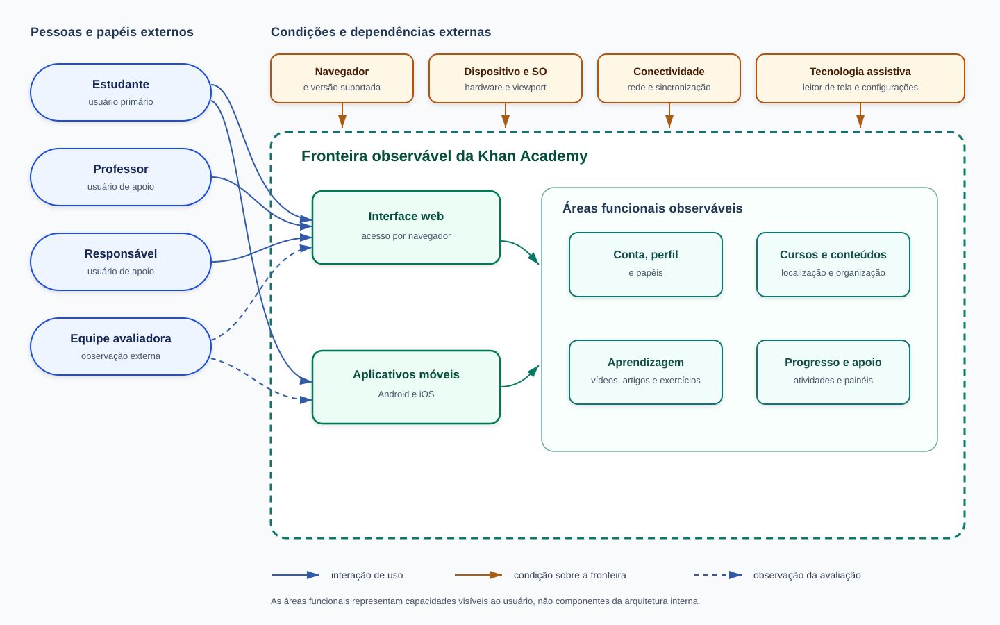

Produto e contexto de uso da Khan Academy
Este documento caracteriza o produto e o contexto de uso necessários aos critérios
F1-C2 e F1-C3. A caracterização
foi elaborada a partir de documentação pública oficial da Khan Academy, consultada em
18 de outubro de 2026.
As três marcações abaixo diferenciam a natureza das informações:
- Documentado: informação sustentada por fonte oficial;
- Proposto: hipótese analítica da equipe a ser validada no planejamento da avaliação;
- Não observável: elemento para o qual não há evidência pública ou acesso técnico suficiente.
O propósito e as características de qualidade são mantidos no documento específico de requisitos. A definição definitiva de objetos, ambientes, tarefas, participantes e exclusões pertence à atividade de definição do escopo. Portanto, os recortes deste documento são insumos para essa decisão, e não uma antecipação do escopo.
1. Classificação e finalidade do produto
A Khan Academy é classificada, para esta avaliação, como um produto de software educacional interativo, disponibilizado como serviço on-line por interface web e por aplicativos móveis oficiais. A classificação descreve a forma observável de entrega e uso; não implica conhecimento da arquitetura interna nem de relações contratuais do serviço.
Segundo a organização, sua missão é oferecer educação gratuita e de alta qualidade a qualquer pessoa, em qualquer lugar. O produto disponibiliza cursos e recursos para estudantes, professores e responsáveis, com conteúdos do ensino básico ao início do ensino superior [S1]. No contexto desta avaliação, estudantes são os usuários primários. Professores e responsáveis são usuários de apoio porque podem organizar atividades, acompanhar progresso e orientar o uso [S2], [S6], [S7] e [S11].
1.1 Fronteira adotada para caracterização
A fronteira documental abrange o site principal da Khan Academy e seus aplicativos oficiais para Android e iOS, além das funções diretamente expostas por essas interfaces. Os itens abaixo são ofertas ou formas de distribuição relacionadas, mas não devem ser presumidos como parte do objeto de avaliação:
- Khan Academy Kids, produto voltado a crianças de dois a oito anos e divulgado separadamente [S1], [S3];
- Khanmigo, oferta de tutoria e apoio com inteligência artificial apresentada separadamente pela organização [S1];
- Khan Academy Districts, oferta institucional não necessária aos fluxos gerais de estudantes, professores e responsáveis [S1];
- distribuição por Kolibri para contextos sem conectividade, indicada como uma alternativa em parceria, e não como a interface web ou o aplicativo móvel principal [S3].
Essa fronteira é apenas uma base de descrição. A definição do escopo deve estabelecer quais superfícies e fluxos serão efetivamente incluídos.
2. Requisitante e partes interessadas
2.1 Distinção entre os papéis
O Propósito da avaliação e uso pretendido
define o cenário de escola pública, o requisitante e as decisões D1 a D4 que os
resultados devem apoiar. Esta seção detalha as partes interessadas desse cenário sem
redefinir o propósito. No documento de requisitos, a coordenação da escola pública é
o requisitante da avaliação. Para manter a consistência, esta caracterização adota
a mesma convenção e distingue dois planos:
- Demandante acadêmico: a disciplina Qualidade de Software 1, representada pela docente, determina a realização do trabalho e seus critérios de entrega.
- Requisitante da avaliação: a coordenação da escola pública que, no cenário hipotético definido para C1, decidiria se recomenda o produto. Nenhuma escola real contratou ou solicitou o estudo.
A Khan Academy não é o requisitante: não houve contato formal nem solicitação da organização. Ela é fornecedora/mantenedora do produto observado e possível destinatária dos resultados. Os avaliadores são os integrantes da equipe; os estudantes, professores e responsáveis são usuários ou representantes do contexto de uso.
2.2 Matriz de stakeholders
Os critérios de sucesso abaixo são propostas da equipe, derivadas da rubrica, do cenário de aplicação e da documentação oficial. Não foram obtidos por entrevista e precisam ser confirmados antes de orientar decisões definitivas de escopo.
| Categoria | Parte interessada | Papel e necessidade | Expectativa ou critério de sucesso proposto | Influência sobre a avaliação |
|---|---|---|---|---|
| Demandante acadêmico | Disciplina Qualidade de Software 1, representada pela docente | Determina a realização de uma avaliação de produto baseada na família SQuaRE e verifica a entrega acadêmica. | Processo rastreável; escolhas justificadas; evidências verificáveis; atendimento à rubrica e aos prazos. | Define critérios de qualidade do trabalho, entregas e restrições metodológicas. |
| Requisitante da avaliação (cenário hipotético) | Coordenação da escola pública definida no documento de requisitos | No cenário de C1, precisa decidir se e como recomendar a Khan Academy aos estudantes nas condições consideradas. | Receber evidências delimitadas por ambiente e perfil, com limitações explícitas, suficientes para fundamentar a recomendação. | Orienta a comparação entre formas de acesso, a seleção de condições de uso e a apresentação dos resultados; não representa uma solicitação de escola real. |
| Avaliadores | Integrantes da equipe do projeto | Planejam, executam, registram e interpretam a avaliação externa dentro do prazo e dos recursos disponíveis. | Procedimento viável, reproduzível e coerente com as normas; separação entre fatos, hipóteses e evidências coletadas. | Definem o desenho final, os instrumentos e o rigor; limitações de ferramentas, participantes e dispositivos restringem a validade dos resultados. |
| Usuários primários | Estudantes, inclusive iniciantes, pessoas com baixa visão e usuários de tecnologia assistiva | Precisam localizar conteúdos, estudar e realizar atividades nas condições de acesso disponíveis [S1], [S5], [S8], [S9]. | Concluir os fluxos selecionados sem barreiras impeditivas e com desempenho aceitável segundo métricas que ainda serão operacionalizadas. | Fundamentam os perfis candidatos e a escolha de apreensibilidade, acessibilidade, adaptabilidade e eficiência de desempenho. |
| Usuários de apoio | Professores | Organizam turmas, atribuem atividades e acompanham o progresso para apoiar estudantes [S2], [S6]. | Obter informação suficiente para orientar o acesso e intervir quando necessário; funções docentes só serão avaliadas se o escopo definitivo as incluir. | Influenciam o cenário de recomendação, as tarefas introdutórias e a interpretação de dificuldades de aprendizagem do uso. |
| Usuários de apoio | Pais e responsáveis | Vinculam contas de estudantes, especialmente crianças, acompanham atividade e progresso e orientam o uso [S6], [S7], [S11]. | Conseguir apoiar o estudante e compreender o progresso nas funções documentadas; funções de responsável dependem do escopo final. | Introduzem contexto de contas vinculadas e cuidado com estudantes menores, sem tornar privacidade ou segurança objeto de teste não autorizado. |
| Fornecedor/mantenedor e destinatário potencial | Khan Academy e suas equipes de produto | Mantêm as interfaces públicas e podem, em tese, utilizar achados externos para melhoria. | Receber achados reproduzíveis, associados a versões, ambientes e passos, sem alegação de certificação. | A documentação e as versões públicas delimitam o que pode ser observado. Não há influência direta ou aceite formal nesta avaliação. |
Tabela 1. Matriz de partes interessadas e influência na avaliação. Fonte: Elaborado por: Enzo Menali
2.3 Rastreabilidade com o propósito e o uso pretendido
A relação entre os stakeholders desta caracterização e as decisões definidas no documento de requisitos é direta:
D1: coordenação, professores e estudantes fundamentam a decisão sobre recomendar a plataforma em dispositivos de entrada e redes limitadas;D2: estudantes com baixa visão ou que usam leitor de tela, professores e responsáveis fundamentam a decisão sobre indicação e ajustes de acessibilidade;D3: estudantes novos e professores fundamentam a decisão sobre a necessidade de uma introdução ao uso da plataforma;D4: a equipe avaliadora utiliza necessidades, prioridades e limitações dos demais stakeholders para definir objetivos, questões, métricas e rigor da avaliação.
A coordenação corresponde ao requisitante da seção 1.3 do documento de requisitos. A
Khan Academy permanece apenas como destinatária potencial dos achados, sem se tornar
tomadora das decisões D1 a D4.
3. Descrição estruturada do software
3.1 Áreas funcionais observáveis
A Tabela 2 organiza funções públicas por área de uso. A palavra “área” evita inferir módulos internos: são agrupamentos funcionais percebidos externamente.
| Área funcional observável | Funções documentadas relevantes | Usuários relacionados | Fonte |
|---|---|---|---|
| Conta, perfil e papéis | Criação e edição de conta; seleção de papéis de estudante, professor ou responsável; vinculação opcional a provedores de identidade. | Estudantes, professores e responsáveis | [S6], [S10] |
| Localização e organização de conteúdos | Seleção de cursos, visualização de conteúdos e organização da página inicial do estudante. | Estudantes | [S1], [S5] |
| Aprendizagem | Acesso a vídeos, artigos, exercícios interativos e prática com níveis de domínio. | Estudantes | [S1], [S3] |
| Atividades e metas | Exibição de tarefas atribuídas e metas de domínio na página inicial e nos aplicativos. | Estudantes e professores | [S2], [S3], [S5] |
| Progresso e apoio | Acompanhamento de atividade e progresso pelo estudante; painéis para professores; vinculação e acompanhamento por responsáveis. | Estudantes, professores e responsáveis | [S2], [S5], [S7], [S11] |
| Continuidade entre interfaces | Sincronização do progresso entre aplicativo e site quando há conta; download de vídeos para estudo off-line no aplicativo. | Estudantes | [S3] |
| Preferências de acessibilidade | Opções para reduzir movimento, ocultar conteúdo que dependa de interação visual, remover cor de vídeos e exibir legendas, conforme disponibilidade documentada. | Estudantes com necessidades de acessibilidade | [S8] |
Tabela 2. Áreas funcionais observáveis do produto. Fonte: Elaborado por: Enzo Menali, com base nas fontes indicadas
3.2 Interfaces externas
| Interface | Descrição verificável | Implicação inicial para a avaliação |
|---|---|---|
| Interface web | Acesso ao site pelas versões atuais de Chrome, Edge, Firefox e Safari; navegadores antigos podem não oferecer todas as funções [S4]. | A adaptação a diferentes resoluções e tamanhos de tela permanece objeto da avaliação. Navegador, sistema operacional, viewport e versão precisam ser registrados. |
| Aplicativo Android | Aplicativo oficial distribuído pelo Google Play, com exercícios, atividades, sincronização e download de vídeos [S3]. | Pode diferir da web e do iOS; versão do aplicativo, aparelho e versão do Android devem compor a evidência. |
| Aplicativo iOS | Aplicativo oficial distribuído pela App Store, com funções móveis documentadas [S3]. | Requer ambiente iOS disponível; sua ausência deve ser declarada, e não simulada como equivalência com Android. |
| Painéis de professor e responsável | Interfaces associadas a contas e papéis específicos para atribuição, acompanhamento e vínculo de estudantes [S2], [S6], [S7], [S11]. | Não devem ser incluídas por consequência automática: a definição do escopo deve estabelecer se são objetos ou apenas elementos do contexto. |
| Tecnologia assistiva | Uso combinado com leitores de tela e recursos do sistema/navegador. A Khan Academy documenta combinações recomendadas e limitações para leitura de conteúdo e equações [S9]. | Tecnologia assistiva, navegador, sistema e configurações formam um único ambiente de observação e devem ser registrados em conjunto. |
Tabela 3. Interfaces externas e implicações para a avaliação. Fonte: Elaborado por: Enzo Menali, com base nas fontes indicadas
3.3 Dependências observáveis, ambientes e limitações de acesso
| Elemento externo | Dependência ou condição observável | Relevância para as características selecionadas | Limite atual |
|---|---|---|---|
| Dispositivo e sistema operacional | Computador ou dispositivo móvel capaz de executar navegador ou aplicativo compatível. | Adaptabilidade; comportamento temporal; utilização de recursos. | A equipe ainda deve inventariar aparelhos e versões reais disponíveis. “Celular de entrada” precisa de especificação operacional, não apenas do rótulo comercial. |
| Navegador | Versão atual de Chrome, Edge, Firefox ou Safari para a interface web [S4]. | Adaptabilidade; comportamento temporal; acessibilidade, inclusive na combinação com leitor de tela. | Não é possível afirmar equivalência entre navegadores sem observação; versões antigas estão fora do suporte documentado. |
| Conectividade | Acesso à rede para carregar e sincronizar dados; aplicativos permitem baixar vídeos para uso off-line [S3]. | Comportamento temporal; utilização de dados; adaptabilidade a condições de acesso. | O recurso off-line documentado não autoriza presumir que exercícios e todas as funções funcionem sem rede. Perfis de rede devem ser definidos e controlados na definição do escopo. |
| Conta e sessão | Algumas funções de progresso, turmas, vínculos e sincronização dependem de conta e papel configurados [S5], [S6], [S7]. | Apreensibilidade; adaptabilidade; definição reproduzível dos fluxos. | Não se deve usar dados reais de menores nem contornar controles de acesso. Contas e dados de teste precisam ser planejados. |
| Provedores de identidade | A página de configurações documenta vínculos opcionais com Google, Facebook, Clever, ClassLink, Apple, Microsoft ou e-mail [S6]. | Pode afetar o fluxo inicial e sua apreensibilidade. | Serviços terceiros não devem ser testados como se fossem componentes internos da Khan Academy; o método de autenticação deve ser fixado ou excluído do fluxo. |
| Mídia e reprodução | Vídeos e legendas dependem do cliente, da rede e dos controles disponibilizados [S3], [S8]. | Comportamento temporal; utilização de recursos; acessibilidade. | CDN, codificação e infraestrutura de mídia são internas ou externas não controladas; só a resposta percebida no cliente é mensurável. |
| Tecnologia assistiva e configurações | Leitores de tela, ampliação, contraste e preferências de acessibilidade interagem com site, navegador e sistema [S8], [S9]. | Acessibilidade; adaptabilidade. | A documentação oficial reconhece limitações de leitura. A avaliação externa não equivale a auditoria completa de conformidade. |
| Infraestrutura de servidor | Serviços remotos processam e entregam os recursos acessados pelo cliente. | Pode influenciar tempos observados. | Topologia, banco de dados, algoritmos, capacidade, carga e consumo de recursos do servidor são não observáveis e não devem ser inferidos. |
Tabela 4. Dependências e condições externas relevantes. Fonte: Elaborado por: Enzo Menali, com base nas fontes indicadas
Os ambientes abaixo são candidatos para discussão durante a definição do escopo, e não uma matriz de testes aprovada:
| Ambiente candidato | Componentes a especificar antes da execução | Características relacionadas |
|---|---|---|
| Web em computador | Hardware; sistema operacional; navegador e versão; resolução; tipo e perfil de rede. | Adaptabilidade; comportamento temporal; utilização de recursos; apreensibilidade. |
| Web em dispositivo móvel | Aparelho; memória disponível; sistema; navegador; viewport; perfil de rede móvel. | Adaptabilidade; comportamento temporal; utilização de recursos; apreensibilidade. |
| Aplicativo Android | Modelo do aparelho; Android; versão do aplicativo; armazenamento/memória; perfil de rede. | Adaptabilidade; comportamento temporal; utilização de recursos. |
| Aplicativo iOS | Modelo do aparelho; iOS; versão do aplicativo; perfil de rede. | Adaptabilidade; comportamento temporal; utilização de recursos. |
| Web com tecnologia assistiva | Sistema; navegador; leitor de tela e versão; ampliação; contraste; dispositivo de entrada. | Acessibilidade; adaptabilidade. |
Tabela 5. Ambientes candidatos a serem deliberados no escopo. Fonte: Elaborado por: Enzo Menali
4. Perfis candidatos de estudantes
Os perfis da Tabela 6 são personas analíticas provisórias. Eles não representam pessoas entrevistadas, não estimam prevalência e não comprovam problemas no produto. Servem para tornar explícitas condições que podem orientar o escopo e o recrutamento, caso a equipe obtenha participantes com consentimento e condições adequadas.
| ID | Perfil candidato e contexto | Necessidade relevante | Características relacionadas | Observação candidata, a definir no escopo definitivo |
|---|---|---|---|---|
P1 |
Estudante novo, com pouca familiaridade com plataformas educacionais | Compreender a navegação, encontrar um conteúdo e iniciar uma atividade sem treinamento desproporcional. | Usabilidade: apreensibilidade. | Sucesso, erros, pedidos de ajuda, tempo e percepção durante tarefas introdutórias; instrumento e participantes ainda não definidos. |
P2 |
Estudante com baixa visão que usa ampliação, contraste ou ajustes de apresentação | Perceber conteúdo, controles, foco e feedback com ampliação e configurações necessárias. | Usabilidade: acessibilidade; Portabilidade: adaptabilidade. | Inspeção manual de fluxos selecionados com zoom, contraste e configurações documentadas; não substitui avaliação por usuário real. |
P3 |
Estudante que depende de leitor de tela e navegação por teclado | Acessar estrutura, rótulos, ordem de foco, conteúdo matemático, instruções e feedback sem dependência visual. | Usabilidade: acessibilidade; Portabilidade: adaptabilidade. | Fluxos com combinação documentada de leitor de tela, navegador e sistema [S9]; avaliação com participante é preferível e depende de viabilidade ética e logística. |
P4 |
Estudante que acessa por rede móvel lenta, instável ou com franquia de dados | Iniciar e manter o estudo com tempos e transferência de dados compatíveis com a condição disponível. | Eficiência de desempenho: comportamento temporal e utilização de recursos. | Tempos percebidos, falhas e volume de dados em perfil de rede controlado; limites aceitáveis ainda devem ser definidos. |
P5 |
Estudante com dispositivo de recursos limitados | Executar os fluxos sem consumo que inviabilize a tarefa ou cause degradação incompatível com o aparelho. | Eficiência de desempenho: utilização de recursos e comportamento temporal; Portabilidade: adaptabilidade. | CPU, memória, transferência de dados e tempos de resposta do cliente, se as ferramentas disponíveis permitirem medição válida. |
P6 |
Estudante que alterna entre computador compartilhado, navegador móvel e aplicativo próprio | Retomar o estudo e reconhecer as mesmas funções essenciais em interfaces diferentes. | Portabilidade: adaptabilidade; Usabilidade: apreensibilidade. | Presença e conclusão dos fluxos selecionados, diferenças de navegação e sincronização documentada; não implica exigir paridade total entre plataformas. |
Tabela 6. Perfis candidatos relacionados às características de qualidade acordadas. Fonte: Elaborado por: Enzo Menali
5. Diagrama de contexto
A Figura 1 representa atores, condições externas, interfaces e áreas funcionais observáveis. As caixas internas são agrupamentos da experiência do usuário, não componentes da arquitetura interna.

Figura 1. Diagrama de contexto da Khan Academy para a avaliação. Fonte: Elaborada por: Enzo Menali, com base em [S1] a [S9]
6. Implicações diretas para a avaliação
| Subcaracterística | O que é observável externamente agora | O que exige decisão ou preparação | O que não deve ser concluído |
|---|---|---|---|
| Adaptabilidade | Presença, apresentação e conclusão de fluxos em combinações identificadas de interface, sistema, navegador, viewport e tecnologia assistiva. | Selecionar combinações, versões, tarefas e critério de equivalência funcional. | Compatibilidade universal ou paridade completa entre web, Android e iOS. |
| Comportamento temporal | Tempos percebidos e eventos do cliente para páginas, vídeos e exercícios em condições controladas. | Definir pontos de início/fim, perfil de rede, aquecimento, repetições e limiar de aceitação. | Desempenho global do serviço, capacidade dos servidores ou causa interna de uma demora. |
| Utilização de recursos | CPU, memória, armazenamento temporário e transferência de dados do cliente, quando as ferramentas permitirem. | Definir ferramentas, baseline, unidade, duração, repetição e aparelhos. | Consumo de infraestrutura da Khan Academy ou de serviços de terceiros. |
| Apreensibilidade | Desempenho e dificuldades de participantes novos em tarefas definidas, ou inspeção exploratória claramente identificada como tal. | Definir tarefas, protocolo, perfil e quantidade de participantes, consentimento e critério de sucesso. | Facilidade de aprendizado de toda a população a partir de opinião da equipe ou de uma única sessão. |
| Acessibilidade | Barreiras observadas em fluxos selecionados por inspeção de teclado, ampliação, contraste e leitor de tela; achados automáticos como apoio. | Escolher WCAG/regras de referência, combinações assistivas e forma de participação de usuários com deficiência. | Certificação integral de conformidade, ausência de barreiras em todo o produto ou validação apenas por ferramenta automática. |
Tabela 7. Mensurabilidade e limites da avaliação externa. Fonte: Elaborado por: Enzo Menali
Esses limites sustentam uma avaliação caixa-preta e condicionada às versões, ambientes e perfis efetivamente observados. Também ficam fora desta caracterização a eficácia pedagógica dos conteúdos, a comparação com concorrentes, testes de segurança sem autorização e qualquer afirmação de certificação do produto.
Referências
[S1] KHAN ACADEMY. About. Disponível em: https://www.khanacademy.org/about. Data de atualização não informada. Acesso em: 18 out. 2026.
[S2] KHAN ACADEMY. Khan Academy for Teachers. Disponível em: https://www.khanacademy.org/teachers. Data de atualização não informada. Acesso em: 18 out. 2026.
[S3] KHAN ACADEMY. Downloads. Disponível em: https://www.khanacademy.org/downloads. Data de atualização não informada. Acesso em: 18 out. 2026.
[S4] KHAN ACADEMY HELP CENTER. Which browsers are supported? Disponível em: https://support.khanacademy.org/hc/en-us/articles/204795660-Which-browsers-are-supported. Atualizado em: 31 jan. 2023. Acesso em: 18 out. 2026.
[S5] KHAN ACADEMY HELP CENTER. What is my Learner Home page, and what can I do there? Disponível em: https://support.khanacademy.org/hc/en-us/articles/360030629852-What-is-my-Learner-Home-page-and-what-can-I-do-there. Atualizado em: 13 ago. 2024. Acesso em: 18 out. 2026.
[S6] KHAN ACADEMY HELP CENTER. How can I edit my account settings? Disponível em: https://support.khanacademy.org/hc/en-us/articles/204707040-How-can-I-edit-my-account-settings. Atualizado em: 9 jun. 2025. Acesso em: 18 out. 2026.
[S7] KHAN ACADEMY HELP CENTER. How do I create or link child accounts to my parent account? Disponível em: https://support.khanacademy.org/hc/en-us/articles/202262994-How-do-I-create-or-link-child-accounts-to-my-parent-account. Atualizado em: 3 fev. 2026. Acesso em: 18 out. 2026.
[S8] KHAN ACADEMY HELP CENTER. Khan Academy's accessibility settings. Disponível em: https://support.khanacademy.org/hc/en-us/articles/360015623271-Khan-Academy-s-accessibility-settings. Atualizado em: 20 ago. 2025. Acesso em: 18 out. 2026.
[S9] KHAN ACADEMY HELP CENTER. Can Khan Academy be used with a screen reader or read-aloud tools? Disponível em: https://support.khanacademy.org/hc/en-us/articles/360015349472-Can-Khan-Academy-be-used-with-a-screen-reader-or-read-aloud-tools. Atualizado em: 20 jul. 2026. Acesso em: 18 out. 2026.
[S10] KHAN ACADEMY HELP CENTER. How do I set up a new user account? Disponível em: https://support.khanacademy.org/hc/en-us/articles/202487450-How-do-I-set-up-a-new-user-account. Atualizado em: 7 nov. 2025. Acesso em: 18 out. 2026.
[S11] KHAN ACADEMY HELP CENTER. What reports can I use as a parent to monitor my child's activity on Khan Academy? Disponível em: https://support.khanacademy.org/hc/en-us/articles/36120531499789-What-reports-can-I-use-as-a-parent-to-monitor-my-child-s-activity-on-Khan-Academy. Atualizado em: 9 jun. 2025. Acesso em: 18 out. 2026.
Histórico de versões
| Versão | Data | Descrição | Responsável | Revisor |
|---|---|---|---|---|
| 1.2 | 18/10/2026 | Padronização de referências e legendas; rastreabilidade entre stakeholders, propósito e decisões D1 a D4; remoção de conteúdo redundante sobre convenções e pendências. | Enzo Menali | Pedro Lucas |
| 1.1 | 18/10/2026 | Alinhamento do requisitante e da ISO/IEC 25010:2011 aos requisitos; revisão das fontes S8 e S9, da interface web e da concisão. | Enzo Menali | Pedro Lucas |
| 1.0 | 18/10/2026 | Caracterização do produto e do contexto, matriz de stakeholders, perfis candidatos, diagrama e limites de mensurabilidade para F1-C2 e F1-C3. | Enzo Menali | Pedro Lucas |